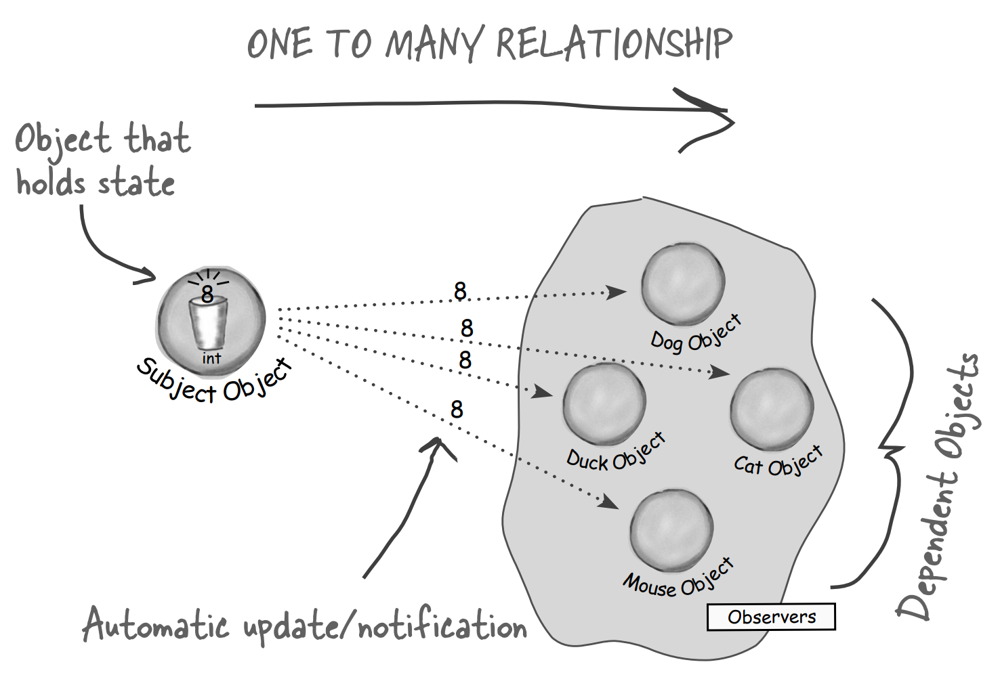
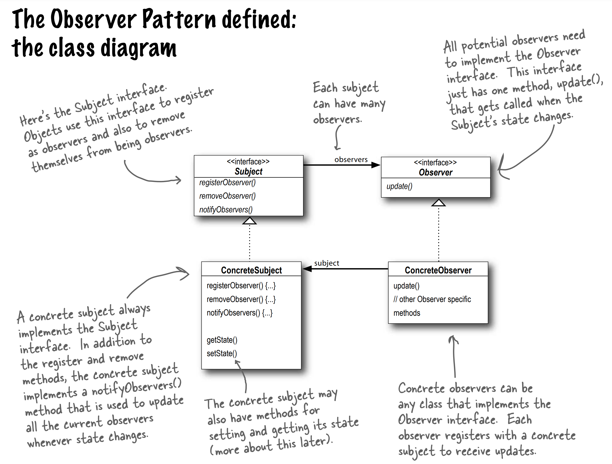
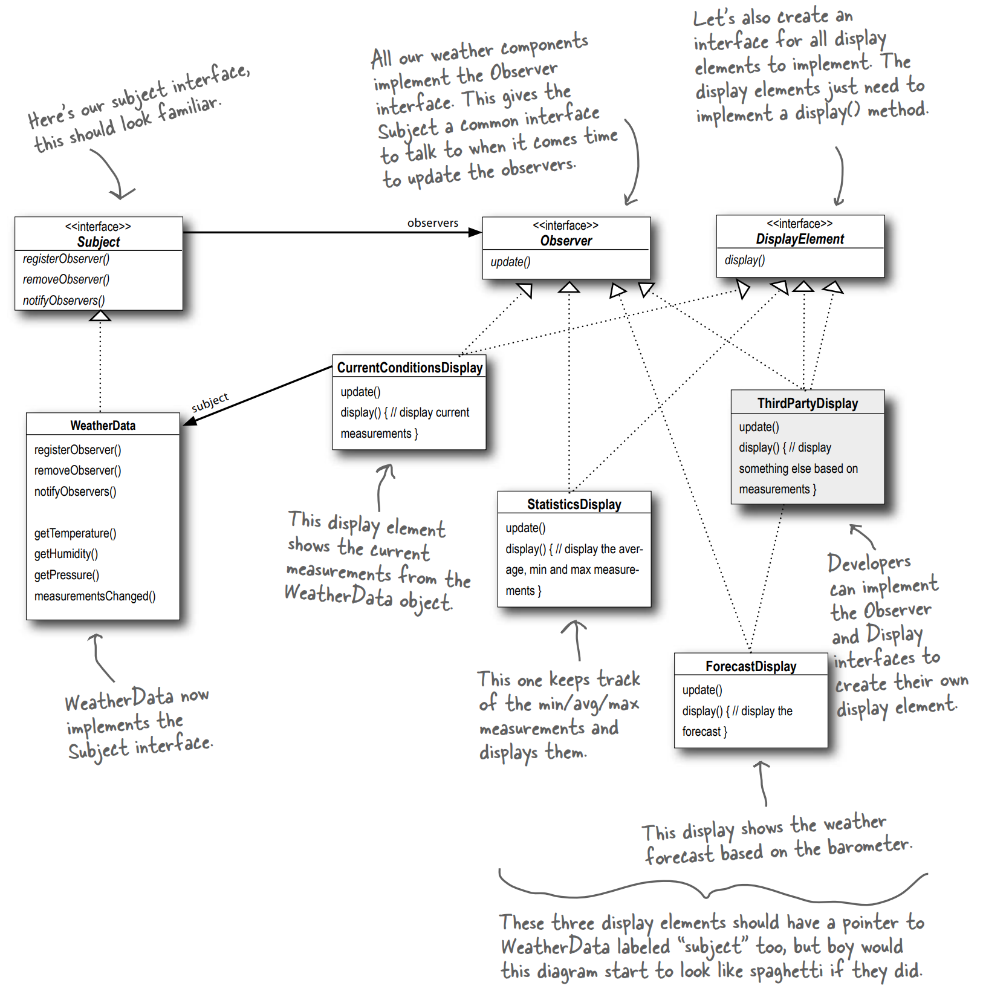

Definition
The Obeserver Pattern defines a one-to-many depedency between objects so when one object changes state, all of its dependent are notified and updated automatically.
The Observer Pattern provides an object design where subjects and observer are loosely coupled. The two objects can interact, but have very little knowledge of each other.

Class Diagram

Implementation Weather Station
public class WeatherStation {
public static void main (String[] args) {
WeatherData weatherData = new WeatherData();
CurrentConditionsDisplay currentDisplay =
new CurrentConditionsDisplay(weatherData);
weatherData.setMeasurements(80, 60, 30.4);
weatherData.setMeasurements(78, 70, 27.4);
}
}
Implementation Interfaces
public interface Subject {
public void registerObserver(Observer o);
public void removeObserver(Observer o);
public void notifyObservers();
}
public interface Observer {
public void update(float temperature, float humidity, float pressure);
}
public interface DisplayElement {
public void display();
}
Implementation Subject
public class WeatherData implements Subject {
private ArrayList observers;
private float temperature;
private float humidity;
private float pressure;
public WeatherData() {
observers = new ArrayList();
}
public void registerObserver(Observer o) {
observers.add(o);
}
public void removeObserver(Observer o) {
int i = observers.indexOf(o);
if (i >= 0) {
observers.remove(i);
}
}
public void notifyObservers() {
for (int i = 0; i < observers.size(); i++) {
Observer observer = (Observer)observers.get(i);
observer.update(temperature, humidity, pressure);
}
}
public void measurementsChanged() {
notifyObservers();
}
public void setMeasurements(float temperature, float humidity, float pressure) {
this.temperature = temperature;
this.humidity = humidity;
this.pressure = pressure;
measurementsChanged();
}
}
Implementation Display Elements (Observer)
public class CurrentConditionsDisplay implements Observer, DisplayElement {
private float temperature;
private float humidity;
private Subject weatherData;
public CurrentConditionsDisplay(Subject weatherData) {
this.weatherDats = weatherData;
weatherData.registerObserver(this);
}
public void update(float temperature, float humidity, float pressure) {
this.temperature = temperature;
this.humidity = humidity;
display();
}
public void display() {
System.out.println("Current conditions: "
+ temperature + " degrees and " + humidity + "% humidity");
}
}
UML Diagram
Sample design for a weather station updates in diagram.
